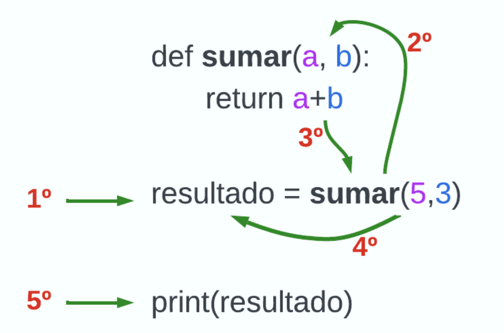
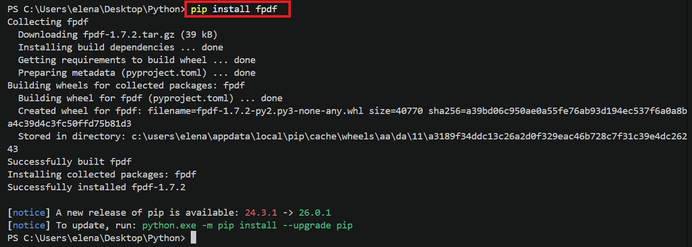
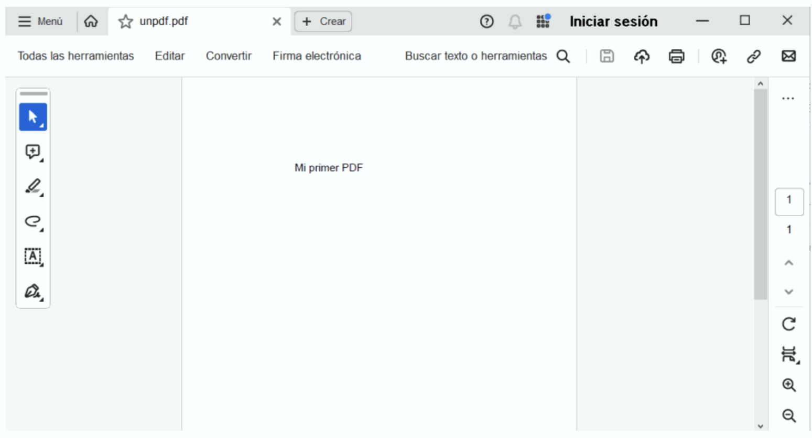
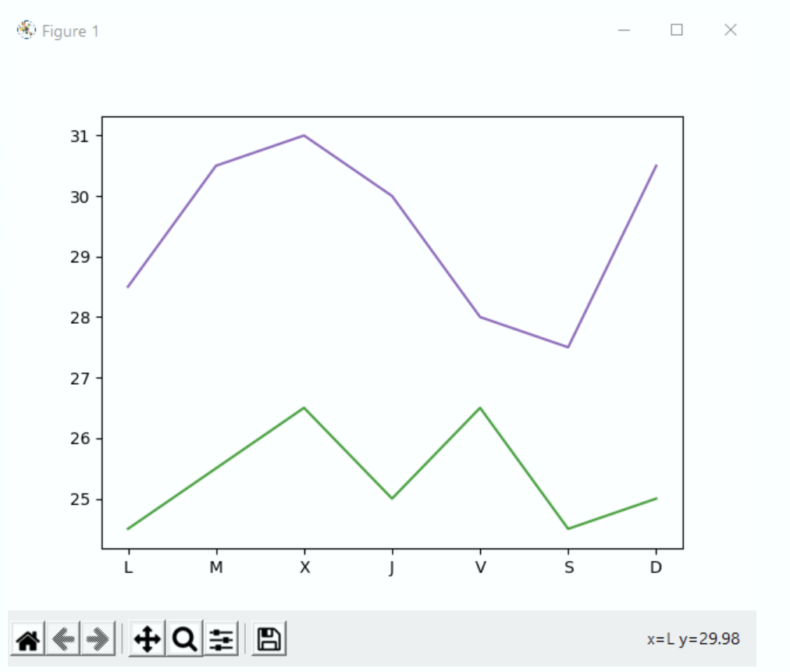

Funciones y módulos¶
Funciones y módulos¶
La modularización es una técnica fundamental en la programación que permite dividir un programa en partes más pequeñas, manejables y reutilizables, conocidas como módulos o funciones. Esta práctica mejora la legibilidad y mantenibilidad del código, y facilita la colaboración entre múltiples desarrolladores.
Cada módulo tiene una funcionalidad definida y puede ser desarrollado y probado de manera independiente.
Funciones¶
Las funciones son bloques de código que realizan una tarea específica y se pueden invocar -ser llamadas- desde otras partes del programa.
En Python se definen utilizando la palabra clave def seguida del nombre de la función y paréntesis que pueden incluir parámetros.
# Esquema conceptual de la definición de una función
def nombre_de_la_funcion(parametro1, parametro2):
# Bloque de código
return valor_de_retorno
def saludar(nombre):
print("Hola,", nombre)
saludar("Elena") # Output: Hola, Elena
Como hemos indicado más arriba, las funciones pueden aceptar parámetros, que son variables que se pasan a la función para que pueda utilizarlas en su bloque de código. Además, las funciones pueden devolver un valor utilizando la palabra clave return.
def sumar(a, b):
return a + b
resultado = sumar(5, 3)
print(resultado) # Salida: 8
Veamos cuál sería el flujo de ejecución del programa anterior:
- El ordenador lee las líneas 1 y 2, pero no las ejecuta (ya que la definición de una función sólo se ejecuta cuando la función es llamada).
- Se ejecuta la línea 4, de derecha a izquierda, por tanto, lo primero que se hace es llamar a sumar(5,3).
- Se busca la definición de la función sumar, se encuentra en la línea 1, y se sustituyen los parámetros por los valores, es decir, a=5 y b=3.
- Con los parámetros establecidos se entra a ejecutar el bloque interior de la función: return 5+3.
- La función devuelve 8 y el programa vuelve al punto en el que se llamó a la función, línea 4, y como consecuencia de ello se hace resultado=8.
- Se ejecuta la línea 5, mostrándose 8 en pantalla.

Además de lo anterior, cuando se trabajan con funciones es muy importante entender el alcance de las variables.
El alcance de una variable («scope») determina dónde puede ser utilizada dentro del código.
Las variables definidas dentro de una función tienen un alcance LOCAL, es decir, solo pueden ser utilizadas dentro de esa función. Las variables definidas fuera de cualquier función tienen un alcance GLOBAL y pueden ser utilizadas en cualquier parte del programa.
Por ejemplo, en el siguiente programa, la variable mensaje se ha creado en el interior de la función (línea 2), por tanto, cuando la usamos en la línea 6 (fuera de la función), nos va a generar un error.
def mostrar_mensaje():
mensaje = "Hola desde la función"
print(mensaje)
mostrar_mensaje()
print(mensaje) # Esto generará un error porque 'mensaje' es una variable local
Módulos¶
Cuando nuestros programas empiezan a crecer, acumulando cientos o miles de líneas de código, por mucho que tengamos nuestro código organizado en funciones, seguirá siendo algo muy difícil de mantener. Por eso, podemos ir un paso más allá en la organización del código, usando módulos.
Los módulos son archivos que contienen definiciones de funciones, de esta manera, podemos aliviar la cantidad de código que tenemos en nuestro programa principal, y cuando necesitemos usar una función, simplemente importamos el archivo que contiene su definición.
Por ejemplo, vamos a crear un archivo llamado matematicas.py donde incluiremos la definición de algunas funciones:
def sumar(a, b):
return a + b
def restar(a, b):
return a - b
Si luego, en nuestro programa principal necesitamos usar las funciones sumar o restar, o cualquier otra incluida en ese módulo, lo importamos y lo usamos.
import matematicas
resultado_suma = matematicas.sumar(10, 5)
resultado_resta = matematicas.restar(10, 5)
print("Suma:", resultado_suma)
print("Resta:", resultado_resta)
Además, esa instrucción import no sólo nos permite importar un módulo que hayamos creado nosotros, sino cualquier módulo sea quien sea el propietario. Y aquí es donde radica una de los mayores atractivos de Python: dispone de un catálogo de módulos extremadamente potentes que podemos usar para programar cualquier cosa.
Por ejemplo, usando el módulo fpdf podemos crear un PDF con muy pocas líneas de código:
Para poder usar un módulo de terceros, debes instalarlo previamente ejecutando en la consola: pip install fpdf

A continuación, programamos el texto que queremos pasar a pdf:
from fpdf import FPDF
pdf = FPDF(orientation='P', unit='mm', format='A4')
pdf.add_page()
pdf.set_font('Arial','',16)
pdf.text(x=60,y=50,txt='Mi primer PDF')
pdf.output('unpdf.pdf','F')
Si ahora vamos al directorio donde se encuentra nuestro archivo de código, veremos cómo se ha creado un archivo nuevo llamado unpdf.pdf con este contenido:

Así de sencillo es crear un PDF usando un programa escrito por nosotros mismos. Esto tiene innumerables utilidades para automatizar procesos, como por ejemplo: generar diplomas, boletines de notas, informes, imprimir estadísticas, etc…
Otro ejemplo muy interesante podría ser el de visualizar gráficamente datos que tengamos recogidos por sensores. Un módulo muy popular que nos permite hacer esto es matplotlib. Vamos a usarlo para graficar las temperaturas de la última semana en Madrid y Barcelona:
import matplotlib.pyplot as plt
fig, ax = plt.subplots()
dias = ['L', 'M', 'X', 'J', 'V', 'S', 'D']
temperaturas = {'Madrid':[28.5, 30.5, 31, 30, 28, 27.5, 30.5], 'Barcelona':[24.5, 25.5, 26.5, 25, 26.5, 24.5, 25]}
ax.plot(dias, temperaturas['Madrid'], color = 'tab:purple')
ax.plot(dias, temperaturas['Barcelona'], color = 'tab:green')
plt.show()
El resultado tras ejecutar el programa anterior, sería:

Como ves, podemos hacer cualquier cosa que se nos ocurra si dominamos la sintaxis de Python para importar módulos y conocemos las instrucciones que nos permiten programar los módulos que importamos (esto último debes consultarlo en la web de cada módulo). Puedes revisar este sencillo manual de matplotlib para que compruebes de primera mano lo sencillo que es.
Codificación¶
Para entrenar un poco nuestra cabeza realizaremos los niveles 6, 14 y 15 del siguiente juego:

Actividades¶
📝 AA4.18 Modulos¶
(C.ESP1 / CE1.2 / IC1-3p)
-
Agregar estudiantes y sus calificaciones a un diccionario
Crea un programa que permita agregar nombres de estudiantes como claves y sus calificaciones como valores en un diccionario.
Solución
calificaciones = {} num_estudiantes = int(input("¿Cuántos estudiantes quieres agregar?: ")) for i in range(num_estudiantes): nombre = input(f"Introduce el nombre del estudiante {i + 1}: ") calificacion = int(input(f"Introduce la calificación de {nombre}: ")) calificaciones[nombre] = calificacion print("Diccionario de estudiantes y calificaciones:", calificaciones)Se almacenan los nombres como claves y las calificaciones como valores.
-
Buscar un valor en un diccionario
Escribe un programa que permita buscar una clave en un diccionario. Se usa el operador
inpara comprobar la existencia de la clave.Solución
frutas_colores = { "manzana": "rojo", "platano": "amarillo", "pera": "verde", "naranja": "naranja" } fruta = input("Introduce una fruta: ") if fruta in frutas_colores: print(f"El color es: {frutas_colores[fruta]}") else: print("Fruta no encontrada.")Se usa el operador
inpara comprobar la existencia de la clave. -
Actualizar precios en un diccionario
Escribe un programa que actualice o añada productos.
Solución
productos = { "pan": 1.20, "leche": 0.99, "huevos": 2.50 } producto = input("Producto: ") precio = float(input("Precio: ")) productos[producto] = precio print(productos)Asignar un valor a una clave permite actualizar o crearla.
-
Eliminar claves con valores negativos
Elimina las claves con valores negativos.
Solución
numeros = {"a": 5, "b": -3, "c": 8, "d": -1} for clave in list(numeros.keys()): if numeros[clave] < 0: del numeros[clave] print(numeros)Se eliminan las claves cuyos valores son negativos.
-
Contar la frecuencia de letras
Cuenta cuántas veces aparece cada letra.
Solución
palabra = input("Palabra: ") frecuencia = {} for letra in palabra: frecuencia[letra] = frecuencia.get(letra, 0) + 1 print(frecuencia)Se usa un diccionario para contar repeticiones.
-
Intercambiar claves y valores
Invierte claves y valores de un diccionario.
Solución
diccionario = {"nombre": "Juan", "edad": 30, "ciudad": "Madrid"} invertido = {v: k for k, v in diccionario.items()} print(invertido)Se utiliza comprensión de diccionarios.
-
Crear un diccionario desde dos listas
Une dos listas en un diccionario. Utilizamos la función
zip()permite unir claves y valores.Solución
claves = ["nombre", "edad", "ciudad"] valores = ["Ana", 28, "Barcelona"] diccionario = dict(zip(claves, valores)) print(diccionario)zip()permite unir claves y valores. -
Sumar valores de un diccionario
Suma todos los valores numéricos.Se usa
values()para acceder a los valores.Solución
diccionario = {"a": 5, "b": 12, "c": 3} suma = sum(diccionario.values()) print(suma)Se usa
values()para acceder a los valores. -
Encontrar la clave con mayor valor
Identifica la clave con el valor más alto. Utilizamos la función
max()permite encontrar la clave con mayor valor.Solución
diccionario = {"a": 10, "b": 25, "c": 3} clave_max = max(diccionario, key=diccionario.get) print(clave_max)max()permite encontrar la clave con mayor valor. -
Combinar dos diccionarios
Combina dos diccionarios, sobrescribiendo claves repetidas. Utilizamos la función
update()que combina ambos diccionarios.Solución
d1 = {"a": 1, "b": 2} d2 = {"b": 4, "c": 5} d1.update(d2) print(d1)update()combina ambos diccionarios.
🏆 PO4.19 Actividades de autoría¶
(C.ESP1 / CE1.1, CE1.2, CE1.3, CE1.4 / IC5-30p)
Prueba objetiva sobre los contenidos de la asignatura que constará de dos partes:
- Tipo test con 30 preguntas con una única respuesta correcta (3 mal quitan 1 bien).
- Preguntas de respuesta corta.
- Actividad a resolver en 40 min y se realizará con el ordenador del aula.
- No se permitirá el uso de inteligencia artificial o consultas de internet durante la prueba.
Aquí teneis una serie de tipos test para poder practicar: Python, Python II, Listas, Estructuras de datos.